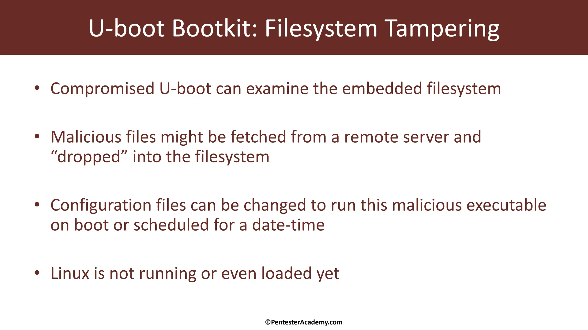
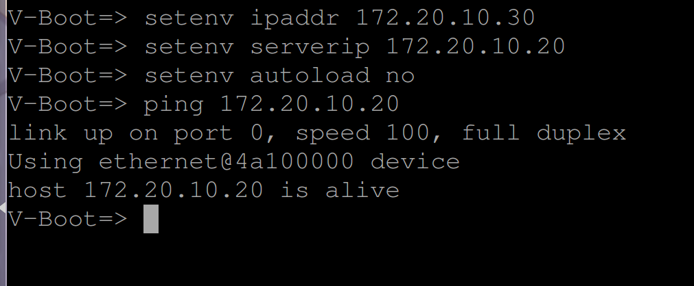
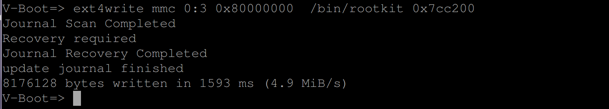
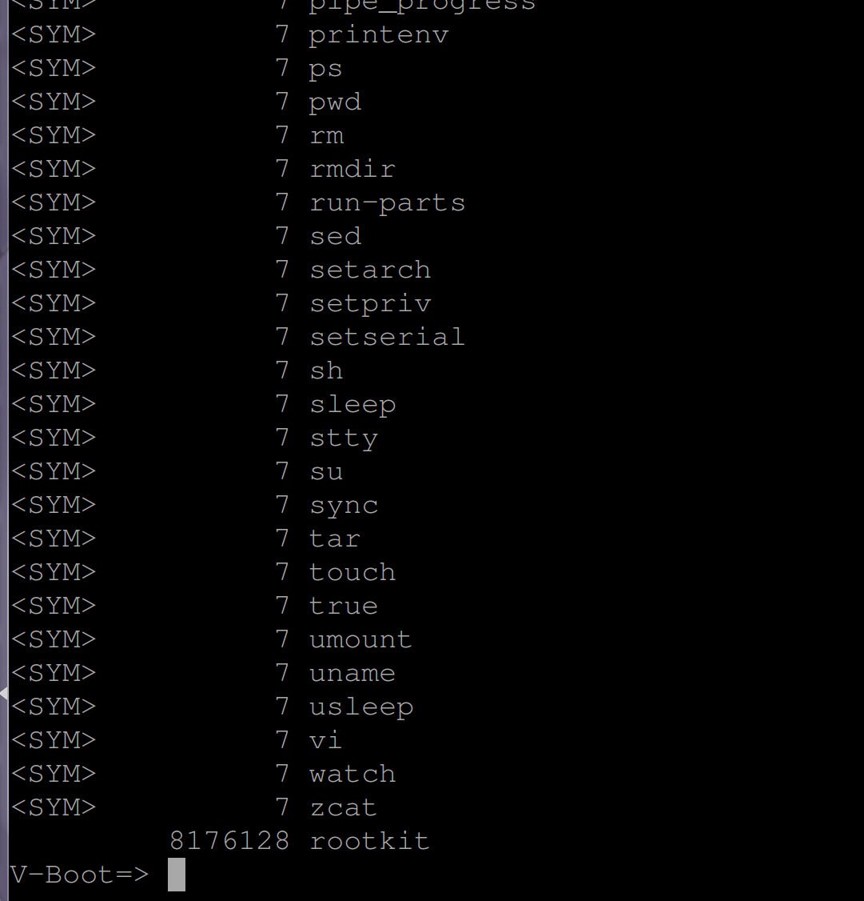
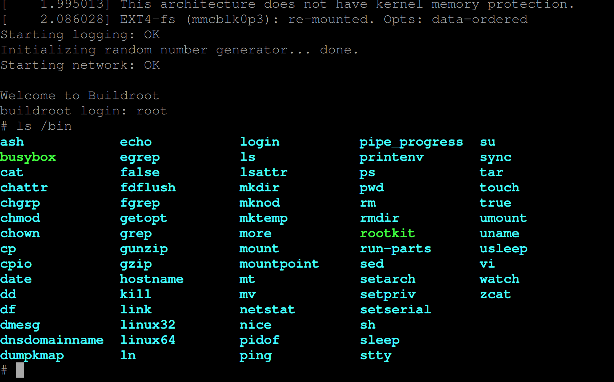
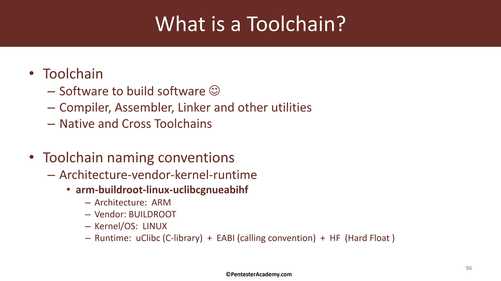
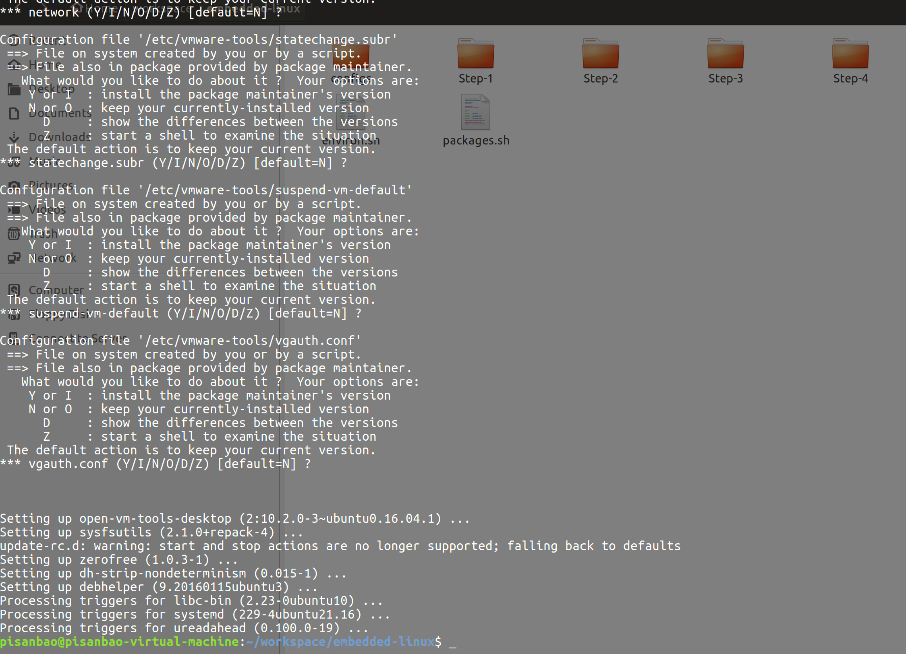
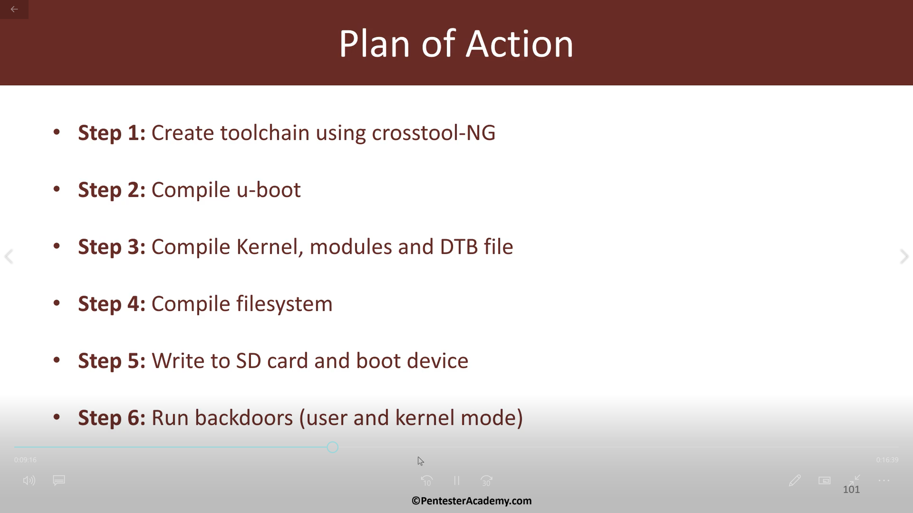
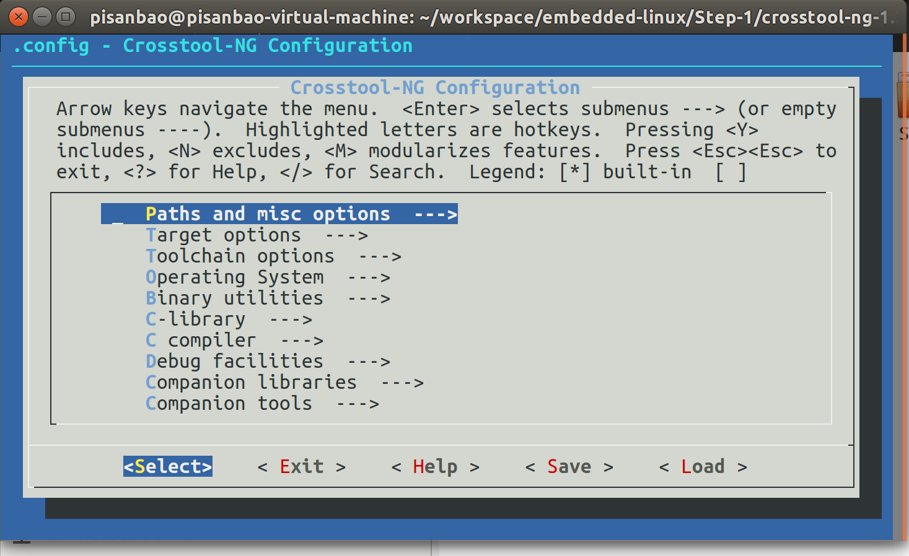
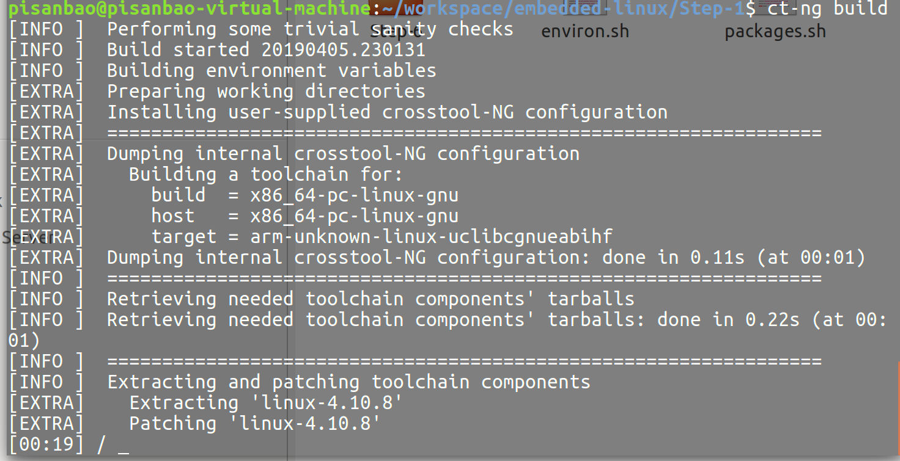

最近特别忙啊写的好多东西都没时间更
下周又要考试。。。//周日要复习了
ctf又要比赛。。。//算了下四月有4次比赛(目前)
老师的pwn群还要刷题//而且堆题什么的貌似不是一天俩天能搞定的。。。
re也要接着刷//昨天刚好弄完一道hook，对hook有点基本认识
//hgame的week4的real，貌似是hook，可是题目已经找不到了啊！！！
。。。
迫于压力，周四上完课就回苏州了
//缓解一下
//其实是为了我的GF
废话说完了。。。先看看课题，是关于bootkit
主要是用U-BOOT整一个BK来达到篡改FS

前几节课里讲过一些命令像ls啊什么的
可以让我们通过U-BOOT查看FS里的东西
然而，U-BOOT还能干很多事情
比如向FS里写东西，这就能被攻击者利用
比如攻击者吧自己电脑里的东西写进FS里
来看看怎么做吧
首先初始配置和上节课一样

接下来把zImage复制进去并加载
加载完后zImage就在内存中了
然后可以把他放在你想的位置
比如这边是放在FS的/bin/rootkit中

成功写入
加载地址用bdinfo查看
可以看到内存的起始地址
后面跟的是长度
用ls mmc 0:3 /bin
可以看到
rootkit已经被写入

接下来输入reset重启下

成功!!!
下一节
//时长25分钟
//看来又是一场恶战
听开头讲的貌似是关于
toolchain在固件中有什么用处
先看看什么是toolchain

wiki
这边建议直接wiki
然后就是安装一个压缩包的东西
因为国内镜像貌似出了问题
我！！！
装了6小时！！！
//此处省略一堆脏话

以后再也不瞎换国内源了

这边是作者的教学计划
step1就是这节课要干掉的
然后下面作者介绍了一下工具
Crosstool-NG
然后解释它balabala怎么好啊
为什么要用它啊
然后就是漫长的安装过程


装半个多小时
中间遇到了很多问题
一直会卡死。。。
装了好多次啊。。。
心态爆炸
而且这节课的内容有点难理解。。。
//TODO